This illustrated tutorial will introduce you to Pica Pica Messenger (or pica-client), client software for distributed decentralised instant messaging system. The main goal of Pica Pica project is to maintain privacy of your communications by using strong end-to-end encryption based on modern cryptographical standards and protocols.
When you start pica-client for the first time, you'll have to create your new account.
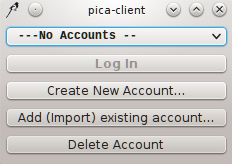Click "Create New Account..." button. Let's say you want to use Anonymous as your nickname. Type it in the "Name:" field. It is recommended to set checkbox "Set passphrase for the secret key", in this case private key associated with your account is encrypted by passphrase and you have to enter it on each login (term "passphrase" is often used in cryptographic applications instead of "password"). Click "Create" button and wait a little until public/private key pair and certificate that represents your account are generated.
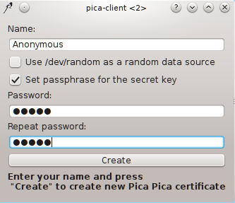Pica Pica users are uniquely identified by their ID which is a SHA224 hash function of their certificate. Your ID will be displayed after certificate generation, and then you can copy it and send to friends, put on your website, print on business cards, etc. ID can be viewed any time later by clicking menu item "Account -> Show My Pica Pica ID". Pica Pica IDs need to have such cryptic looking like wYI8zxNi4XEcMCwi7BRdgOpwgiX+5e1mj6Xr1A== due to decentralised nature of the system.
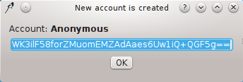So you have successfully created your Pica Pica account. It's time to start using it. Click "OK" in the dialog box above and you'll see initial window, but now drop-down list contains your newly created account and "Log In" button is enabled. Click this button.
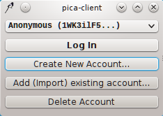If you have set passphrase for your account, prompt will appear. Enter the passphrase and click "OK".
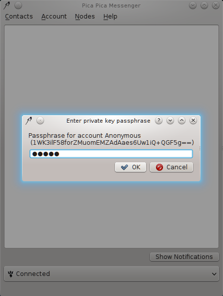Now pica-client will try to make connections to known Pica Pica nodes and update list of active nodes, i.e nodes that are online, up and running. If some alive node is found and connection is successful, pica-client will change its state to "Connected" and sitting bird icon (it is a common magpie, Latin name "Pica pica") in system tray area will be changed to the flying bird icon. Now it's time to add some people to your contact list.
Let's suppose that your friend Jane Doe has sent her Pica Pica ID to you. Right-click on the empty area of the main window (or select menu item "Contacts") and click "Add Contact...". Paste received ID and click "OK".
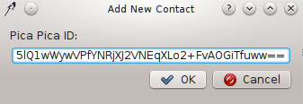Newly added ID will appear in the contacts list, but without nickname yet. Double-click on this ID (or right-click and select "Start Chat"). Chat window will be opened. Say "hi" to Jane. If she is online at this moment, message will be delivered and "+" sign will appear to the left of the message. Also ID entry in the contacts list will be changed to nickname and ID in braces. Remember that date and time indicated in chat window is your local date and time when the message was received or sent by you, not the date and time when it was actually sent or received by your peer. Messages are sent by pressing "Enter", newline is added by combination "Shift"+"Enter". If your contact is not online, outgoing messages are stored in local history and marked as undelivered. Pica-client periodically tries to deliver them.
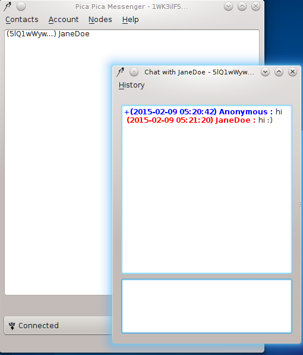Now let's suppose that your another friend John Smith has received your Pica Pica ID, created his account and wants to chat with you. You will see this question
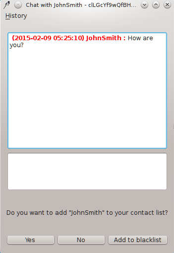You can click "Yes" to add him, "No" to ignore him or "Add to blacklist" to ban him forever. Because he is a friend, probably you want to select "Yes". Then his name will appear in your contact list.
It is strongly recommended to always verify Pica Pica ID of your new contacts in order to prevent "man-in-the-middle" attack. Key exchange and identity verification is a fundamental problem of encrypted communications, so you have to take it seriously. It's better to exchange Pica Pica IDs in person, but obviously that's not always possible. You can make phone calls to your contacts and ask them to read their Pica Pica ID and check that it matches ID in your contact list (right-click on contact and select "Show Pica Pica ID"), then read them your ID and make them verify it in their contact list. This procedure significantly reduces risk of silently replacing ID by some adversary. However, I don't think that government agencies are totally uncapable of imitating voice of selected person in real-time :)
You can exchange files using Pica Pica. Needless to say, file transfers are encrypted too. To send file, right-click on contact and select "Send File". File selection dialog will ask you which file you want to send.

Then file transfer window will show up.
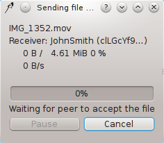Receiver of file has to click "Accept" in order to start tranfer.
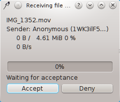Then file transfer starts.
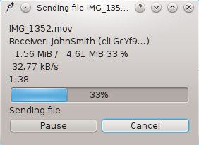